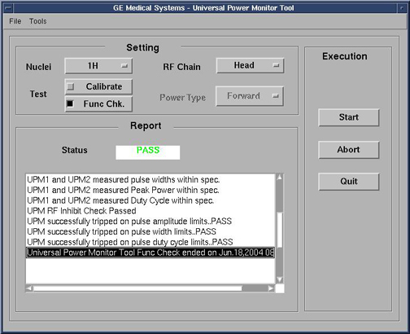

Illustration 15: UPM Looping Trips

During the tests, the user will be prompted three times as each test completes. Look in the error log to confirm that the tests completed successfully.
The following illustrations are examples of pop-ups and error logs that should display.
Illustration 15: UPM Looping Trips
Illustration 16: Looping Trip Error Log Example

Illustration 17: UPM Duty Cycle Loop Trip

Illustration 18: Duty Cycle Loop Trip Log Example

Illustration 19: UPM Head Pass Message
